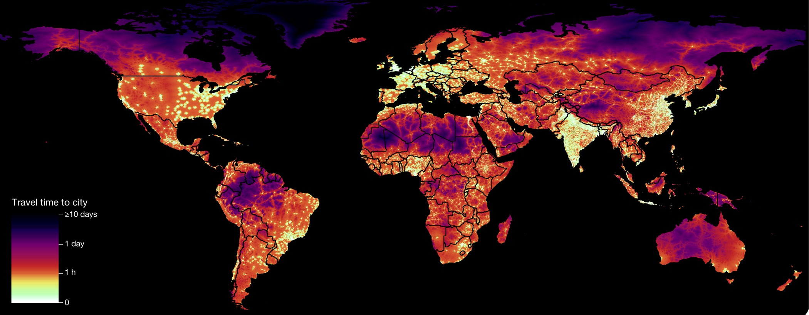

SDG 11, Indicator 2, "Safe, affordable and accessible transport systems" is a measure of the availability and quality of transportation infrastructure and services in urban areas.
Access to safe, affordable, and accessible transport is essential for economic growth, social inclusion, and sustainable development.
To address this issue, several solutions have been proposed, such as investing in public transportation, promoting active transport modes like cycling and walking,
and improving the safety of roads and highways. Many countries and companies have taken steps to address this issue in various parts of the world,
such as the Netherlands' extensive cycling infrastructure and Japan's efficient public transportation system.
Companies like Uber and Lyft have also revolutionized the concept of ride-sharing and increased access to affordable transportation in many urban areas.
While progress has been made in improving transport systems, there are still many challenges to overcome, such as reducing traffic congestion,
improving road safety, and ensuring equitable access to transport services for all people, especially those living in low-income areas.
